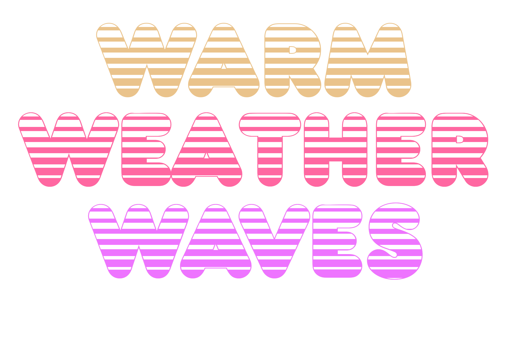
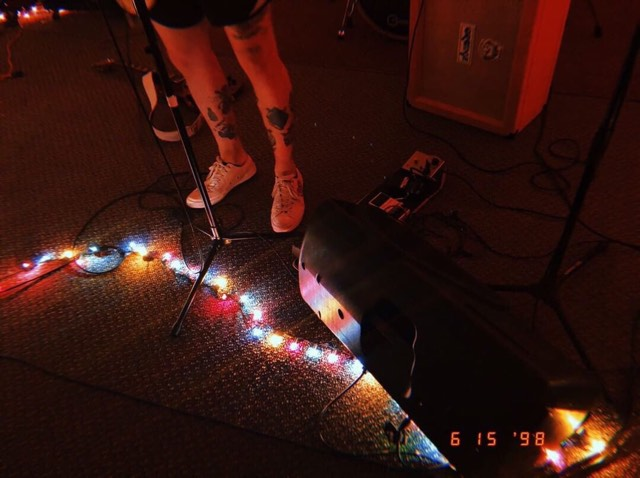
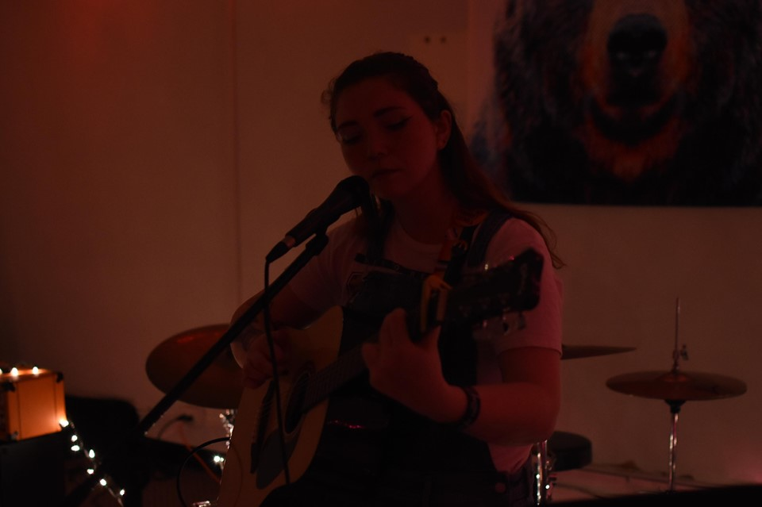
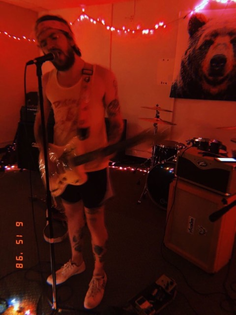
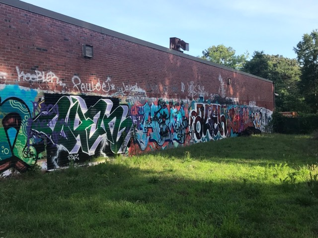
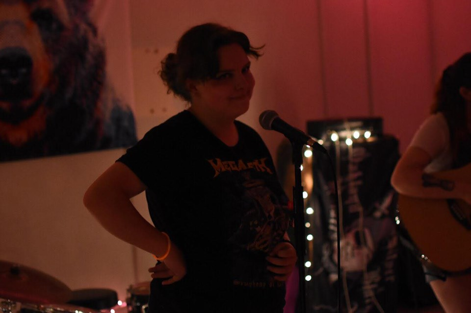

Back
Home

Gallery
You all brought the heat!
Previous
Next
#warmweatherwavesva





Submit photos to be featured in the gallery!
us the #warmweatherwavesva on social media for a chance to be featured